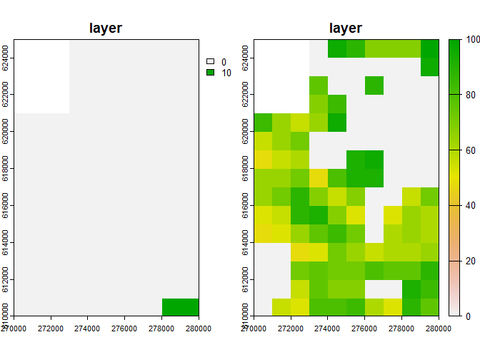
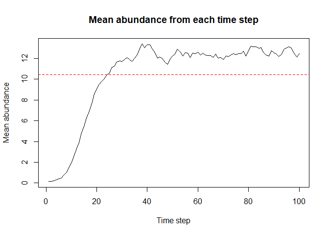
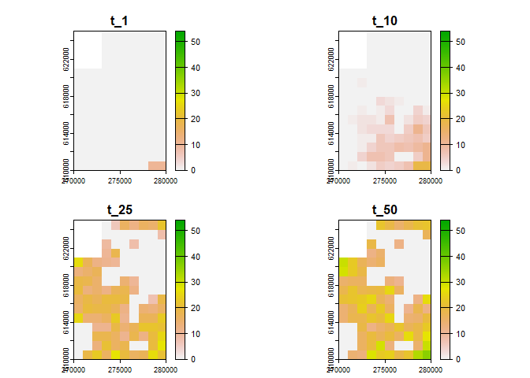
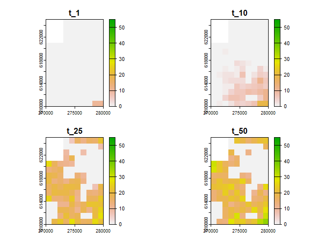
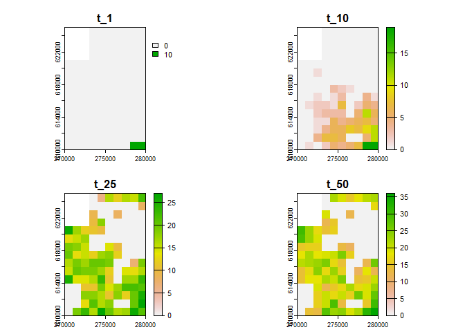

The rangr package is designed to simulate species range dynamics. This tool mimics the essential processes that shape population size and spatial distributions: local dynamics, dispersal and habitat selection. Simulations may be conducted in a spatially-explicit and dynamic environment, which facilitates population projections as they respond to climate or land-use changes. By using different sampling schemes and observational error distributions, the structure of the original survey data can be reproduced or a purely random sampling can be mimicked.
Basic simulation
Here’s an example of how to use the rangr package.
Input maps
Example maps available in rangr:
n1_small.tifn1_big.tifK_small.tifK_small_changing.tifK_big.tif
You can find additional information about these data sets in help files:
Two of the available datasets, n1_small.tif and K_small.tif, represent the abundance of a virtual species at the starting point of a simulation and the carrying capacity of the environment, respectively. Both of these objects refer to the same relatively small area, so they are ideal for demonstrating the usage of the package. To view these maps and their dimensions, you can use the following commands:
library(terra)
#> terra 1.7.29
n1_small <- rast(system.file("input_maps/n1_small.tif", package = "rangr"))
K_small <- rast(system.file("input_maps/K_small.tif", package = "rangr"))You can also use the plot function from the terra package to visualize these maps:

Initialise
To create a sim_data object that contains the necessary information to perform a simulation, use the initialise() function. For example:
sim_data_01 <- initialise(
n1_map = n1_small,
K_map = K_small,
r = log(2),
rate = 1 / 1e3
)Here, we set the intrinsic population growth rate to log(2) and the rate parameter that is related to the kernel function describing dispersal to 1/1e3.
To see the summary of the sim_data object:
summary(sim_data_01)
#> Summary of sim_data object
#>
#> n1 map summary:
#> Min. 1st Qu. Median Mean 3rd Qu. Max. NA's
#> 0.0000 0.0000 0.0000 0.1449 0.0000 10.0000 12
#>
#> Carrying capacity map summary:
#> Min. 1st Qu. Median Mean 3rd Qu. Max. NA's
#> 0.00 0.00 56.00 44.84 72.00 100.00 12
#>
#> growth gompertz
#> r 0.693147180559945
#> A -
#> kernel_fun rexp
#> dens_dep K2N
#> border absorbing
#> max_dist 2000
#> changing_env FALSE
#> dlist TRUESimulation
To perform a simulation, use the sim() function, which takes a sim_data object and the specified number of time steps as input parameters. For example:
sim_result_01 <- sim(obj = sim_data_01, time = 100)To see the summary of the sim_result_01 object:
summary(sim_result_01)
#> Summary of sim_results object
#>
#> Simulation summary:
#>
#> simulated time 100
#> extinction FALSE
#>
#> Abundances summary:
#> Min. 1st Qu. Median Mean 3rd Qu. Max. NA's
#> 0.00 0.00 12.00 10.45 19.00 54.00 1200Note that this is a simple example and there are many more parameters that can be set for initialise() and sim(). See the documentation for the rangr package for more information.
Visualisation
You can use rangr to visualise chosen time steps from the simulation. The plot() function is used to generate the visualisation. Here’s an example:
# generate visualisation
plot(sim_result_01,
time_points = c(1, 10, 25, 50),
template = sim_data_01$K_map
)
#> class : SpatRaster
#> dimensions : 15, 10, 4 (nrow, ncol, nlyr)
#> resolution : 1000, 1000 (x, y)
#> extent : 270000, 280000, 610000, 625000 (xmin, xmax, ymin, ymax)
#> coord. ref. : ETRS89 / Poland CS92
#> source(s) : memory
#> names : t_1, t_10, t_25, t_50
#> min values : 0, 0, 0, 0
#> max values : 10, 19, 27, 36You can adjust the breaks parameter to get more breaks on the colorscale:
# generate visualisation with more breaks
plot(sim_result_01,
time_points = c(1, 10, 25, 50),
breaks = seq(0, max(sim_result_01$N_map + 5, na.rm = TRUE), by = 5),
template = sim_data_01$K_map
)
#> class : SpatRaster
#> dimensions : 15, 10, 4 (nrow, ncol, nlyr)
#> resolution : 1000, 1000 (x, y)
#> extent : 270000, 280000, 610000, 625000 (xmin, xmax, ymin, ymax)
#> coord. ref. : ETRS89 / Poland CS92
#> source(s) : memory
#> names : t_1, t_10, t_25, t_50
#> min values : 0, 0, 0, 0
#> max values : 10, 19, 27, 36If you prefer working on raster you can also transform any sim_result object into SpatRaster using to_rast() function:
# raster construction
my_rast <- to_rast(
sim_result_01,
time_points = 1:sim_result_01$simulated_time,
template = sim_data_01$K_map
)
# print raster
print(my_rast)
#> class : SpatRaster
#> dimensions : 15, 10, 100 (nrow, ncol, nlyr)
#> resolution : 1000, 1000 (x, y)
#> extent : 270000, 280000, 610000, 625000 (xmin, xmax, ymin, ymax)
#> coord. ref. : ETRS89 / Poland CS92
#> source(s) : memory
#> names : t_1, t_2, t_3, t_4, t_5, t_6, ...
#> min values : 0, 0, 0, 0, 0, 0, ...
#> max values : 10, 11, 14, 16, 20, 13, ...And then visualise it using plot() function:

Citation
To cite rangr use citation() function:
The study is supported by the National Science Centre, Poland, grant no. 2018/29/B/NZ8/00066.